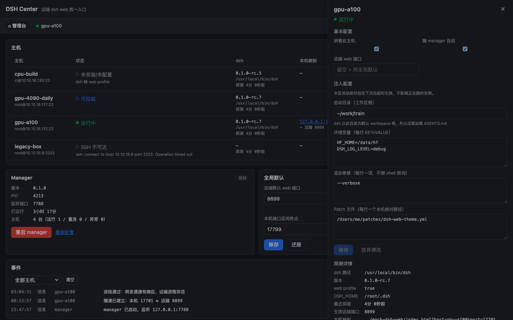
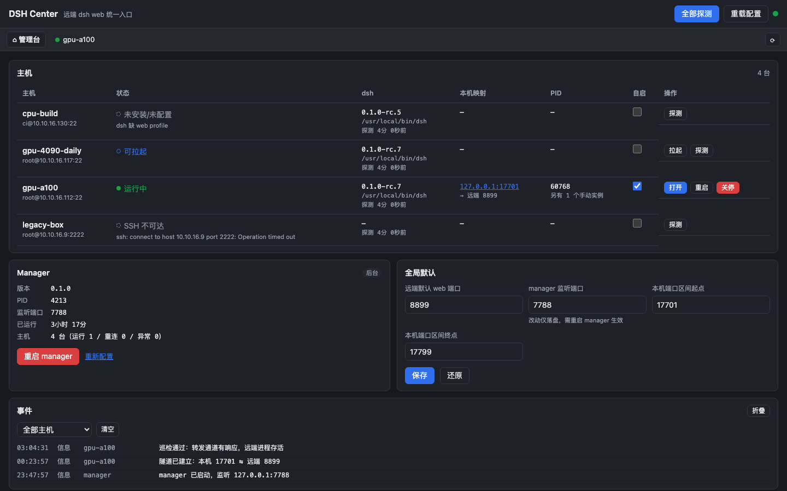
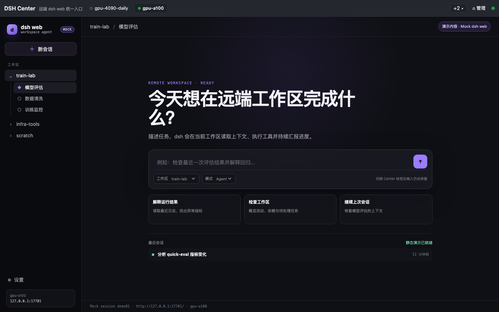
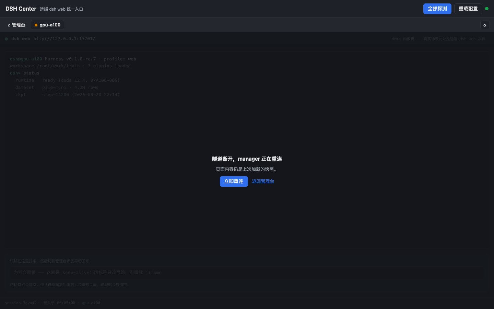

远端零常驻、零安装
没有 agent、没有常驻进程。探测、拉起、关停全靠单条一次性 ssh 命令完成，
远端只留 ~/.dsh_center_remote/ 下的日志与可选 patch 文件。

dsh web，
本机跑一个小服务 + 一个 CLI：经 ssh -L 把远端的 dsh web
映射到本机环回地址，管理台用 iframe 标签页单入口打开各主机，
拉起、关停、重连、看日志都在同一处。
demo 跑的是产品前端本体，只把后端换成了浏览器里的模拟实现—— 按钮都真能点，还能自己注入断联与崩溃。

没有 agent、没有常驻进程。探测、拉起、关停全靠单条一次性 ssh 命令完成，
远端只留 ~/.dsh_center_remote/ 下的日志与可选 patch 文件。

每台在跑的主机自动占一个标签，内容是真实的远端 dsh web（iframe 嵌入，实测无 X-Frame-Options 限制）。切标签只改显隐，不重载——页面内的会话状态不丢。

隧道断了按 1/2/4/8/16/30s 退避重连，恢复即回 running。关停远端进程前逐字比对
ps 命令行指纹，对不上就拒杀——别人手动起的实例只读不写。

下面五步就是 demo 里「自动演播」走的流程。每步都可以点进 demo 自己试。
逐台确认 ssh 能否连上、dsh 装没装、web profile 配没配。结果分三类： 可拉起 / 未安装或未配置 / SSH 不可达。
在 demo 里试试 →远端 nohup 起进程拿到 PID，本机从端口区间里分一个空闲端口，
ssh -L 建隧道。状态走 启动中 → 运行中，标签页随之出现。
iframe 里就是远端 dsh web 本体：页面、插件静态资源、WebSocket、RPC 全走隧道。
打开 gpu-a100 标签 →状态转 隧道重连中，iframe 盖上遮罩但内容留着；退避重连成功即恢复， 不重载页面（dsh web 自己的 WebSocket 会自愈）。
注入一次断联 →记录的 PID 消失且不是我们关停的 → 进程异常退出。重启后新进程起来， iframe 重载一次（旧会话已失效）。
重启一台 →还想看第一次使用的样子？走一遍四步首启引导 →
curl -fsSL https://raw.githubusercontent.com/shendeguize/Remote_DSH_Center/main/install.sh | bash
脚本只做引导：检查 git 与 node ≥ 22 →
clone 到 ~/.dsh_center/app（已存在就 git pull）→
把 dshc 软链进 ~/.local/bin。装完照它提示走：
dshc init # 四步向导：本机端口、远端约定端口、纳管哪些主机
dshc up # 后台起 manager
dshc open # 浏览器打开管理台
软链而非拷贝，所以 git -C ~/.dsh_center/app pull 就是升级。
不想让脚本碰你的机器？clone 下来跑 npm run install:cli 是等价的。